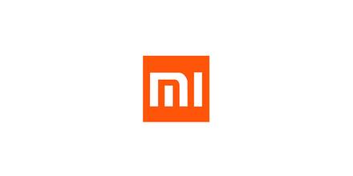

焦点事件 ：
小米进军VR行业：
2016年1月15日，雷军在小米年会上宣布，小米2016年将筹建小米探索实验室，初期重点投入虚拟现实（VR）和智能机器人（51.58 -4.71%，买入）等新方向，为小米发展奠定下一个台阶。这是小米首次官方宣布进军VR。据小米公布的数据，2015年公司国内智能手机出货量超过7000万台，国内行业排名第一。这意味着VR领域将迎来重磅竞争者。
2016年被视为VR行业爆发元年，机构预测全年全球VR设备出货量超过500万台，2020年将达到3000万台，对应市场规模超过1500亿美元。谷歌、Facebook、三星 、腾讯等科技界巨头均宣布进军VR计划，显示出行业发展空间巨大。1月底，三星VR设备GEar VR将正式发售，VR主题关注度将持续提升，相关个股有岭南园林（36.66 +5.83%，买入) 、顺网科技（80.35 +0.34%，买入）等。
在美遭专利起诉：
2015年底，知名NPE（非执业实体）BlueSpike在美国东德州联邦地区法院马歇尔分院向小米提起诉讼，一同被列上榜单的还有深圳通拓科技有限公司，后者是一家跨境电商公司，拥有电商品牌Tomtop。
BlueSpike指控小米与Tomtop设计或贩卖的智能通信设备侵害BlueSpike所拥有美国专利8,930,719（专利名，数据保护方法与装置），被起诉的产品包括小米的手机产品Mi4、Mi5、Mi5Plus以及红米系列产品。
BlueSpike是业内知名的“专利流氓”，在起诉小米之前，它也以同一个专利起诉了华为。此外，该公司还起诉过Google、Yahoo、Facebook等巨头。NPE是指那些本身不制造专利产品或者提供专利服务，而是从其他公司、研究机构或个人发明者手上购买专利的所有权或使用权，然后专门通过发动专利诉讼赚取巨额利润的公司或团体。